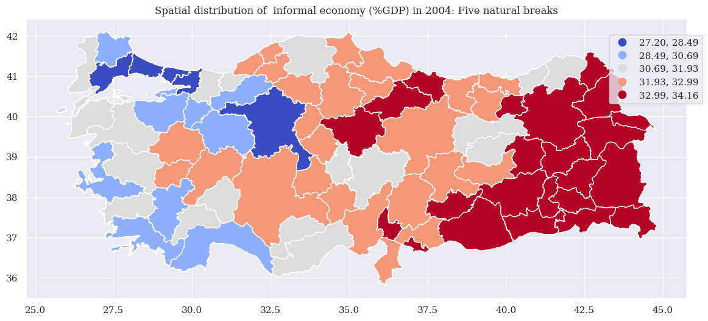
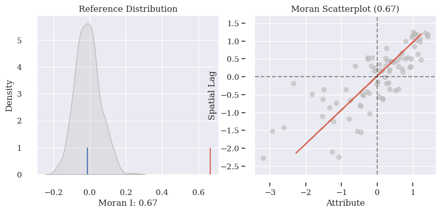
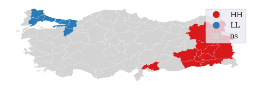
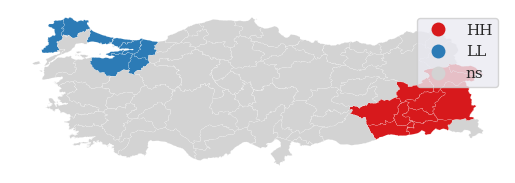

import numpy as np
import pandas as pd
import seaborn as sns
sns.set_style("darkgrid")
sns.set_context(context="paper", font_scale=1.5, rc=None)
sns.set(font="serif")
import seaborn
import geopandas as gpd
import matplotlib.pyplot as plt
import libpysal
from libpysal import weights
from pysal.explore import esda
import esda
from esda.moran import Moran, Moran_Local
import splot
from splot.esda import moran_scatterplot, plot_moran, lisa_cluster
from splot.libpysal import plot_spatial_weights
from giddy.directional import Rose
import os
import contextily
3 Build a queen contiguity matrix from a regular 3x3
from numpy.random import seed
seed(12345678)os.chdir('F:/projects/2024/informal')geojson_data = gpd.read_file("F:/projects/2024/informal/merged2.geojson")geojson_data| id | Level_x | asdf_id | gqid_x | shapeGroup_x | shapeID_x | shapeISO_x | shapeName_x | shapeType_x | Level_y | ... | 2013 | 2014 | 2015 | 2016 | 2017 | 2018 | 2019 | 2020 | 2021 | geometry | |
|---|---|---|---|---|---|---|---|---|---|---|---|---|---|---|---|---|---|---|---|---|---|
| 0 | 0 | ADM1 | 0 | 0 | TUR | TUR-ADM1-80719077B77822815 | TR-01 | Adana | ADM1 | ADM1 | ... | 29.074056 | 28.879486 | 28.717164 | 28.164996 | 28.065424 | 28.169607 | 28.032190 | 27.962083 | 27.963184 | MULTIPOLYGON (((35.38791 36.55628, 35.38883 36... |
| 1 | 1 | ADM1 | 1 | 1 | TUR | TUR-ADM1-80719077B28599679 | TR-02 | Adıyaman | ADM1 | ADM1 | ... | 30.463650 | 30.191129 | 30.059005 | 29.584176 | 29.437475 | 29.383753 | 29.370084 | 29.405895 | 29.467049 | POLYGON ((37.86100 37.46666, 37.87451 37.46648... |
| 2 | 2 | ADM1 | 2 | 2 | TUR | TUR-ADM1-80719077B84550223 | TR-03 | Afyonkarahisar | ADM1 | ADM1 | ... | 29.410471 | 29.017960 | 28.868278 | 28.304597 | 28.053987 | 28.197262 | 28.100381 | 28.123544 | 28.388501 | POLYGON ((30.48061 38.19903, 30.49275 38.19655... |
| 3 | 3 | ADM1 | 3 | 3 | TUR | TUR-ADM1-80719077B65173278 | TR-04 | Ağrı | ADM1 | ADM1 | ... | 31.092032 | 30.920681 | 30.768355 | 30.133650 | 30.046928 | 30.068672 | 29.956799 | 29.893529 | 30.042331 | POLYGON ((43.77542 39.25004, 43.79639 39.26875... |
| 4 | 4 | ADM1 | 4 | 4 | TUR | TUR-ADM1-80719077B72380009 | TR-05 | Amasya | ADM1 | ADM1 | ... | 29.149678 | 28.972973 | 28.654526 | 28.104956 | 28.049226 | 28.235330 | 28.133426 | 28.160648 | 28.537311 | POLYGON ((36.38780 40.66228, 36.39811 40.67508... |
| ... | ... | ... | ... | ... | ... | ... | ... | ... | ... | ... | ... | ... | ... | ... | ... | ... | ... | ... | ... | ... | ... |
| 76 | 76 | ADM1 | 76 | 76 | TUR | TUR-ADM1-80719077B83749854 | TR-77 | Yalova | ADM1 | ADM1 | ... | 27.540859 | 27.064284 | 26.782969 | 26.344062 | 26.303003 | 26.182438 | 26.271476 | 26.056398 | 25.600179 | POLYGON ((29.48180 40.56397, 29.48439 40.56645... |
| 77 | 77 | ADM1 | 77 | 77 | TUR | TUR-ADM1-80719077B67647683 | TR-66 | Yozgat | ADM1 | ADM1 | ... | 29.867141 | 29.399657 | 29.236928 | 28.653018 | 28.719645 | 28.762025 | 28.810795 | 28.693756 | 29.061970 | POLYGON ((35.33995 40.25508, 35.28463 40.22667... |
| 78 | 78 | ADM1 | 78 | 78 | TUR | TUR-ADM1-80719077B51620989 | TR-67 | Zonguldak | ADM1 | ADM1 | ... | 29.217234 | 28.751137 | 28.687704 | 28.219806 | 27.815600 | 27.735502 | 28.050741 | 27.833101 | 27.468281 | MULTIPOLYGON (((31.85365 41.00830, 31.88498 41... |
| 79 | 79 | ADM1 | 79 | 79 | TUR | TUR-ADM1-80719077B759750 | TR-73 | Şırnak | ADM1 | ADM1 | ... | 30.253428 | 29.952221 | 29.914243 | 29.527439 | 29.044468 | 29.077574 | 28.946730 | 28.869628 | 28.986277 | POLYGON ((43.49919 37.74179, 43.43868 37.74784... |
| 80 | 80 | ADM1 | 80 | 80 | TUR | TUR-ADM1-80719077B19552530 | TR-63 | Şanlıurfa | ADM1 | ADM1 | ... | 30.772608 | 30.571467 | 30.396766 | 29.958338 | 29.780211 | 29.893150 | 29.881453 | 29.929674 | 30.030058 | POLYGON ((38.02504 36.83034, 38.02829 36.83268... |
81 rows × 37 columns
geojson_data['coords'] = geojson_data['geometry'].apply(lambda x: x.representative_point().coords[:])
geojson_data['coords'] = [coords[0] for coords in geojson_data['coords']]fig, ax = plt.subplots(figsize=(14,8))
geojson_data.plot(column="2004", scheme='NaturalBreaks', k=5, cmap='coolwarm', legend=True, legend_kwds={'title': '', 'bbox_to_anchor':(1.03, 0.96)}, ax=ax)
plt.title('Spatial distribution of informal economy (%GDP) in 2004: Five natural breaks')
for idx, row in fig, ax = plt.subplots(figsize=(14,8))
merged_data.plot(column="2004", scheme='NaturalBreaks', k=5, cmap='coolwarm', legend=True, legend_kwds={'title': '', 'bbox_to_anchor':(1.03, 0.96)}, ax=ax)
plt.title('Spatial distribution of informal economy (%GDP) in 2004: Five natural breaks')
for idx, row in merged_data.iterrows():
ax.annotate(text=row['province'], xy=row['coords'], fontsize=10,
horizontalalignment='center', bbox={'facecolor': 'white', 'alpha':0.8, 'pad': 2, 'edgecolor':'none'})
plt.tight_layout()
ax.axis("off")
plt.show().iterrows():
ax.annotate(text=row['province'], xy=row['coords'], fontsize=10,
horizontalalignment='center', bbox={'facecolor': 'white', 'alpha':0.8, 'pad': 2, 'edgecolor':'none'})
plt.tight_layout()
ax.axis("off")
plt.show()C:\Users\uursavas\AppData\Local\anaconda3\Lib\site-packages\sklearn\cluster\_kmeans.py:1436: UserWarning: KMeans is known to have a memory leak on Windows with MKL, when there are less chunks than available threads. You can avoid it by setting the environment variable OMP_NUM_THREADS=1.
warnings.warn(NameError: name 'merged_data' is not defined
# lattice stored in a geo-table
w = weights.contiguity.Queen.from_dataframe(geojson_data)
w.transform = "R"
w.neighbors
C:\Users\uursavas\AppData\Local\Temp\ipykernel_20972\3870122094.py:3: FutureWarning: `use_index` defaults to False but will default to True in future. Set True/False directly to control this behavior and silence this warning
w = weights.contiguity.Queen.from_dataframe(geojson_data){0: [36, 41, 57, 61, 46, 63],
1: [32, 80, 54, 25, 41],
2: [19, 52, 53, 38, 24, 74, 31],
3: [17, 37, 59, 75, 44, 30],
4: [66, 77, 71, 23],
5: [19, 52, 38, 57, 58, 43],
6: [64, 11, 30],
7: [40, 24, 58, 55],
8: [20, 53, 21, 55, 40],
9: [48, 50, 18, 52, 22, 10, 31],
10: [50, 52, 9, 60, 61],
11: [44, 6, 30],
12: [42, 45, 78],
13: [17, 67, 56, 25, 59, 79],
14: [64, 34, 72, 29, 30],
15: [65, 18, 51, 20, 53, 31],
16: [30, 73, 59, 28, 29, 25],
17: [3, 67, 75, 59, 13],
18: [65, 9, 42, 78, 15, 22, 26, 31],
19: [2, 5, 38, 24, 58],
20: [51, 53, 8, 76, 15],
21: [8, 27, 70],
22: [48, 18, 23, 9, 42, 45],
23: [48, 66, 4, 68, 77, 22, 45],
24: [2, 19, 7, 74, 55, 58],
25: [1, 13, 80, 16, 54, 56, 59, 28],
26: [65, 18, 78],
27: [49, 21, 70],
28: [16, 54, 73, 29, 25],
29: [33, 34, 69, 73, 14, 16, 54, 28, 30],
30: [64, 3, 6, 11, 44, 14, 16, 59, 29],
31: [2, 18, 52, 53, 9, 15],
32: [80, 1, 36, 41, 63, 47],
33: [34, 69, 72, 29, 62],
34: [72, 33, 29, 14],
35: [75, 79],
36: [0, 32, 63],
37: [3, 44],
38: [2, 19, 52, 5],
39: [49, 51, 70],
40: [8, 55, 7],
41: [0, 1, 32, 69, 54, 46, 63],
42: [18, 22, 12, 45, 78],
43: [57, 52, 5],
44: [11, 3, 37, 30],
45: [68, 22, 23, 42, 12],
46: [0, 61, 69, 41, 60, 77],
47: [32],
48: [50, 22, 23, 9, 77],
49: [27, 70, 39],
50: [48, 9, 10, 60, 77],
51: [65, 20, 39, 76, 15],
52: [2, 5, 38, 9, 10, 43, 57, 61, 31],
53: [2, 20, 55, 8, 74, 31, 15],
54: [1, 69, 41, 28, 29, 25],
55: [53, 7, 40, 8, 74, 24],
56: [80, 67, 25, 13, 79],
57: [0, 52, 5, 43, 61],
58: [24, 19, 5, 7],
59: [16, 17, 3, 25, 13, 30],
60: [50, 77, 10, 61, 46],
61: [0, 52, 57, 10, 60, 46],
62: [33, 66, 69, 71],
63: [0, 41, 32, 36],
64: [72, 30, 6, 14],
65: [26, 18, 51, 15],
66: [4, 68, 23, 71, 62],
67: [17, 56, 75, 13, 79],
68: [66, 45, 23],
69: [33, 71, 41, 77, 46, 54, 29, 62],
70: [49, 27, 21, 39],
71: [66, 4, 69, 77, 62],
72: [64, 33, 34, 14],
73: [16, 28, 29],
74: [24, 2, 53, 55],
75: [17, 3, 67, 35, 79],
76: [51, 20],
77: [4, 69, 71, 46, 48, 50, 23, 60],
78: [18, 26, 42, 12],
79: [35, 67, 56, 75, 13],
80: [32, 1, 56, 25]}geojson_data["2004_lag"] = weights.spatial_lag.lag_spatial(
w, geojson_data["2004"]
)geojson_data["2021_lag"] = weights.spatial_lag.lag_spatial(
w, geojson_data["2021"]
)
moran = esda.moran.Moran(geojson_data["2004"], w)moran.I0.6673411138948363moran1 = esda.moran.Moran(geojson_data["2021"], w)
moran.I0.6673411138948363plot_moran(moran);C:\Users\uursavas\AppData\Local\anaconda3\Lib\site-packages\splot\_viz_esda_mpl.py:354: FutureWarning:
`shade` is now deprecated in favor of `fill`; setting `fill=True`.
This will become an error in seaborn v0.14.0; please update your code.
sbn.kdeplot(moran.sim, shade=shade, color=color, ax=ax, **kwargs)
from splot import esda as esdaplotprint(moran2004.I, moran2021.I)NameError: name 'moran2004' is not definedmoran.p_sim0.001lisa = esda.moran.Moran_Local(geojson_data["2004"], w)esdaplot.lisa_cluster(lisa, geojson_data, p=0.01)
# Display the figure
plt.show()
lisa1 = esda.moran.Moran_Local(geojson_data["2021"], w)esdaplot.lisa_cluster(lisa1, geojson_data, p=0.01)
# Display the figure
plt.show()